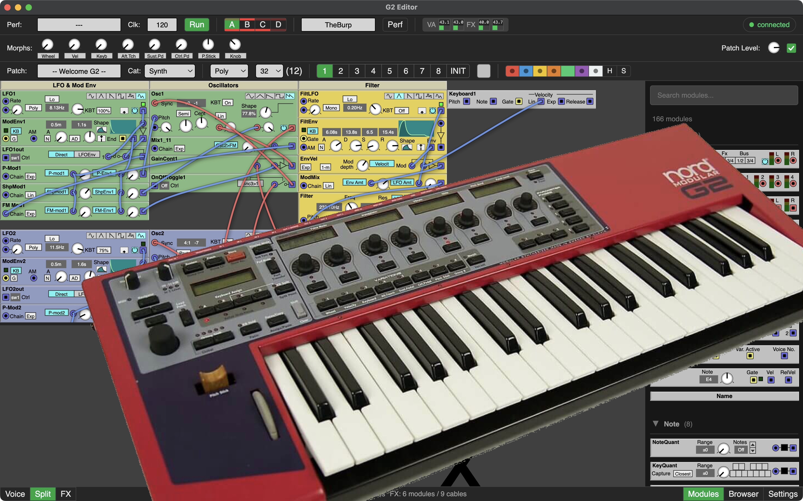

A cross-platform editor for the Nord Modular G2 synthesizer. The original Clavia editor does not run on modern macOS — this editor brings full patch editing to macOS, Windows, and (later) Linux.

.pch2 / .prf2 files without a connected G2Core editing is working. Second-goal features (undo/redo, morphs, MIDI CC) are in progress.
| Goal | Status |
|---|---|
| Core USB, parsing, basic patch editing | ✅ Done |
| Undo/Redo, morphs, MIDI CC, parameter pages | 🔄 In progress |
| Patch Adjuster, Mutator, advanced features | 🗓 Planned |
Protocol knowledge from the Nord G2 community at electro-music.com: the Delphi Editor by bverhue, patchviewer by ian-s, and g2ools by qfingers.
Donations help cover coding-agent subscriptions and future test hardware.